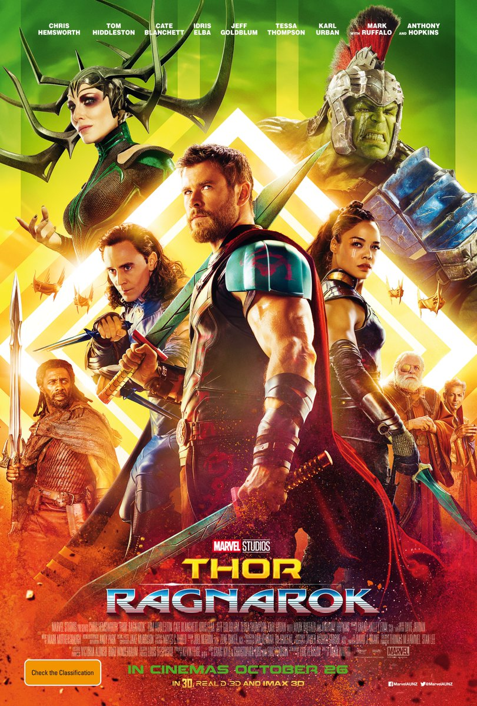
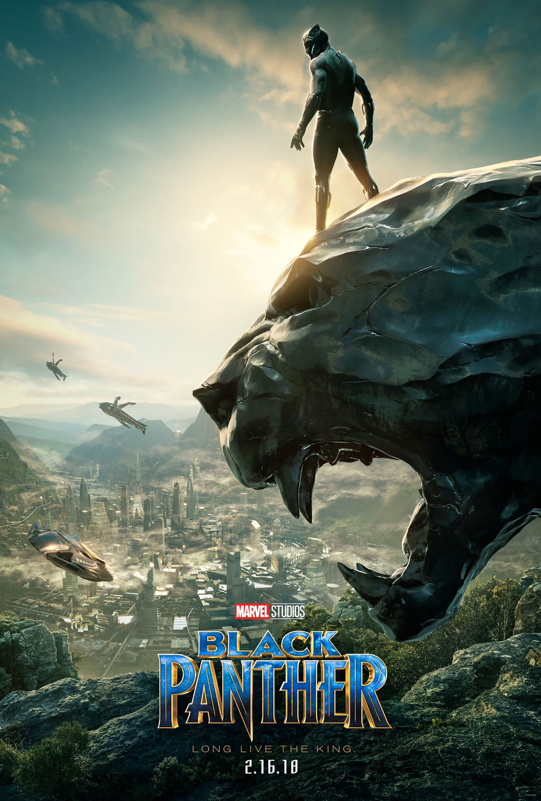

|
 |
|
| IRON MAN Relesing Year-2008 Cast-Robert Downey jr.,Gwyneth Paltrow,Jeef Bridges Director-Jou Favreau |
THE INCREDIBLE HULK Relesing Year-2008 Cast-Lou Ferrigno,Edward Norton,Liv Tyler,Tim Roth Director-Louis Leterrier |
IRON MAN 2 Relesing Year-2010 Cast-Robert Downey jr.,Gwyneth Paltrow,Scarlett Johansson Director-Jou Favreau |
 |
 |
 |
| THOR Relesing Year-2011 Cast-Chirs Hemsworth,Tom Hiddleston,Natalie Portman Director-Kenneth Branagh |
CAPTAIN AMERICA: THE FIRST AVENGER Relesing Year-2011 Cast-Chirs Evans,Hayley Atwell,Hugo Weaving Director-Joe Johnston |
THE AVENGERS Relesing Year-2012 Cast-Chirs Evans,Robert Downey jr,Scarlett Johansson, Chirs Hemsworth,Tom Hiddleston,Jeremy Renner, Mark Ruffalo,Samuel L. Jackson Director-Joss Whedon |
| IRON MAN 3 Relesing Year-2013 Cast-Robert Downey jr.,Gwyneth Paltrow,Mickey Rourke Director-Jou Favreau |
THOR:THE DARK WORLD Relesing Year-2013 Cast-Chirs Hemsworth,Tom Hiddleston,Natalie Portman Director-Alan Taylor |
CAPTAIN AMERICA:THE WINTER SOLDIER Relesing Year-2014 Cast-Chirs Evans,Sebastian Stan,Scarlett Johansson Director-Joe Russo,Anthony Russo |
 |
 |
|
| GARDIANS OF THE GALAXY Relesing Year-2014 Cast-Chris Pratt,Zoe Saldana,Dave Bautista,Vin Diesel, Bradley Cooper Director-James Gunn |
AVENGERS:AGE OF ULTRON Relesing Year-2015 Cast-Chirs Evans,Robert Downey jr,Scarlett Johansson, Chirs Hemsworth,Jeremy Renner,Mark Ruffalo,James Spader, Elizabeth Olsen,Aaron Taylor-Johnson,Paul Bettany Director-Joss Whedon |
ANT-MAN Relesing Year-2015 Cast-Paul Rudd,Michael Douglas,Evangeline Lilly, Corey Stoll Director-Peyton Reed |
 |
 |
|
| CAPTAIN AMERICA:CIVIL WAR Relesing Year-2016 Cast-Chirs Evans,Robert Downey jr,Scarlett Johansson, Chirs Hemsworth,Jeremy Renner,Mark Ruffalo,James Spader, Elizabeth Olsen,Sebastian Stan,Paul Bettany Director-Joe Russo,Anthony Russo |
DOCTOR STRANGE Relesing Year-2016 Cast-Benedict Cumberbatch,Tilda Swinton,Chiwetel Ejiofor Director-Scott Derrickson |
GARDIANS OF GALAXY VOL.2 Relesing Year-2017 Cast-Chris Pratt,Zoe Saldana,Dave Bautista,Vin Diesel, Bradley Cooper,Michael Rooker,Kurt Russell Director-James Gunn |
 |
 |  |
| SPIDER-MAN:HOMECOMING Relesing Year-2017 Cast-Tom Holland,Robert Downey jr,Zendaya,Michael Keaton Director-Jon Watts |
THOR:RAGNAROK Relesing Year-2017 Cast-Chirs Hemsworth,Tom Hiddleston,Mark Ruffalo, Cate Blanchett,Tessa Thompson Director-Taika Waititi |
BLACK PANTHER Relesing Year-2018 Cast-Chadwick Boseman,Michael B. Jordan,Lupita Nyong'o Director-Ryan Coogler |
 |
 |
| AVENGERS INFINITY WAR Relesing Year-2018 Cast-Robert Downey Jr.,Chris Hemsworth,Mark Ruffalo Chris Evans,Scarlett Johansson,Don Cheadle Benedict Cumberbatch,Tom Holland ,Chadick Boseman Zoe Saldana,Karen Gillan,Tom Hiddleston Director-Russo Brothers |
ANT MAN AND THE WASP Relesing Year-2018 Cast-Paul Rudd,Michael Douglas,Evangeline Lilly, Corey Stoll Director-Peyton Reed |
AVENGERS END GAME Relesing Year-2019 Cast-Robert Downey Jr.,Chris Hemsworth,Mark Ruffalo Chris Evans,Scarlett Johansson,Don Cheadle Benedict Cumberbatch,Tom Holland ,Chadick Boseman Zoe Saldana,Karen Gillan Director-Russo Brothers |
| SPIDER-MAN:HOMECOMING Relesing Year-2019 Cast-Tom Holland,Samuel L. Jackson,Zendaya,Jake Gyllenhaal Director-Jon Watts |